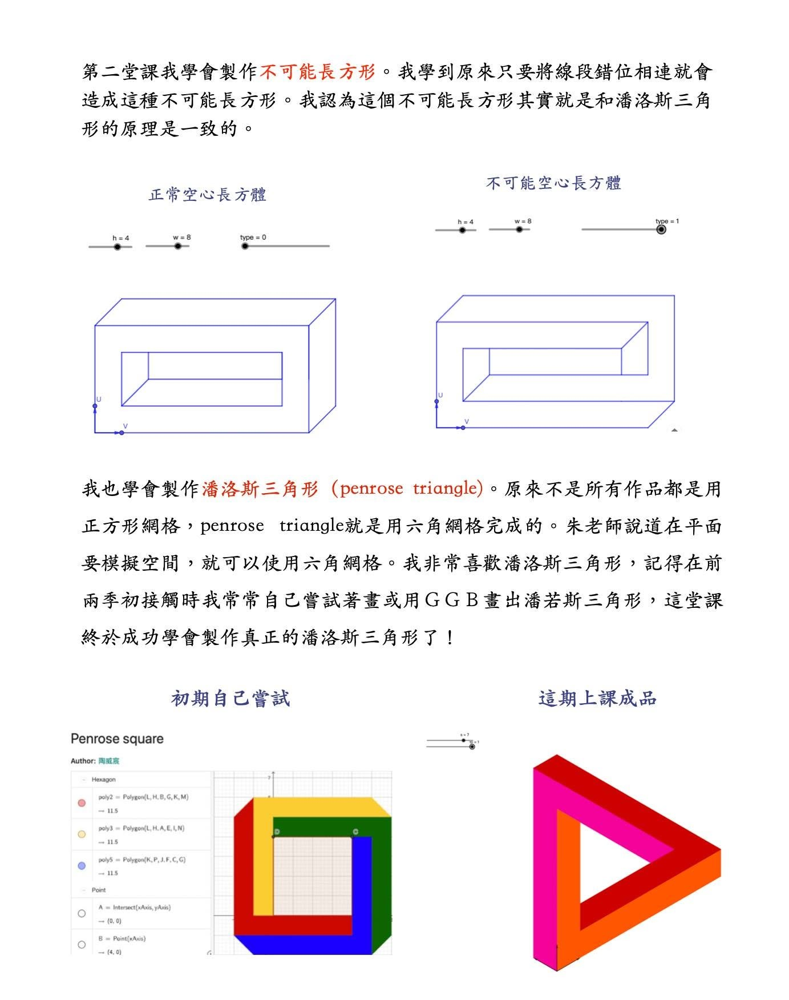
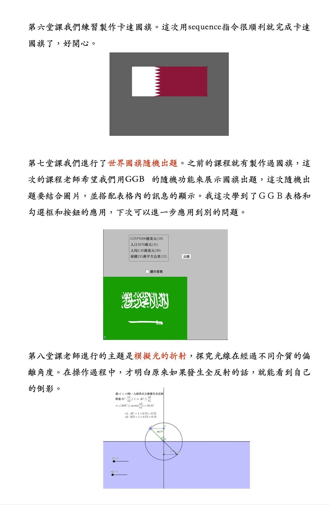
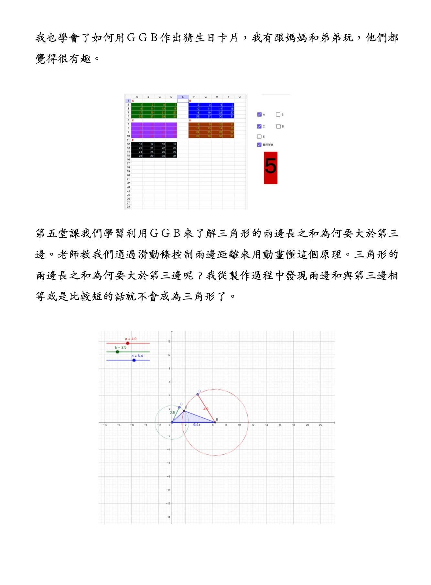
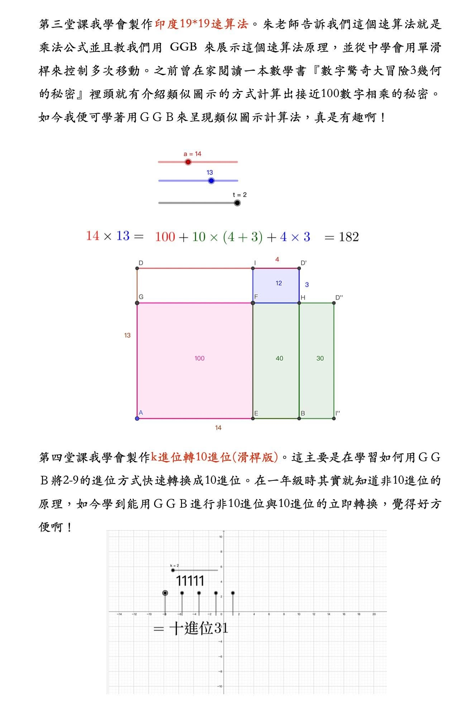
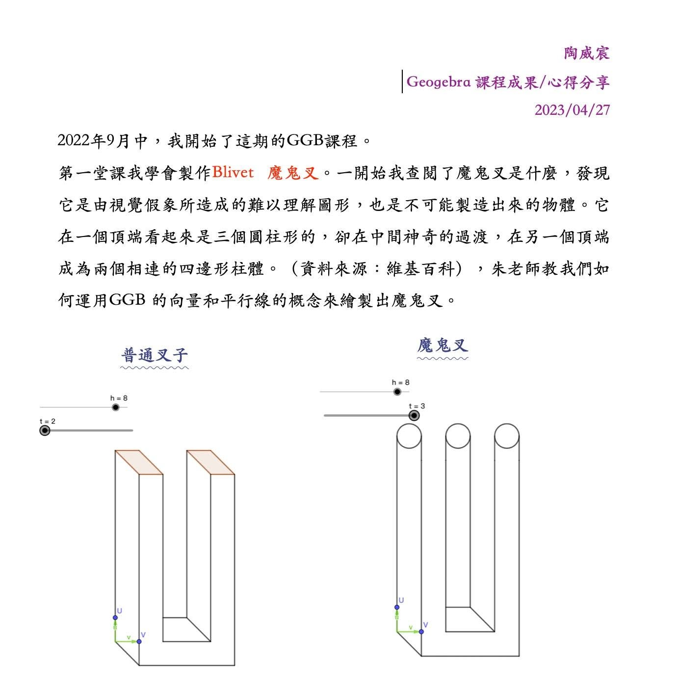

AI的工具是電腦 AI的理論建立在數學上
台大數學碩士 資工博士 朱安強老師給孩子電腦與數學的啟蒙課程文 朱安強
最近聽到喜訊，小三威宸跳考 IMC 四年級，得到一等金獎、奧林匹克全國第 8 名。比起去年進步許多。在這一年他在學什麼呢？
他參加了 Geogebra X Math 4期課程。這是什麼樣的課，就讓我們看一下威宸對這課的評價。
『學GGB真的有很多意想不到的用處，它不僅可以操作科學和數學上的原理，讓我更能快速暸解這些原理其中的意義，』
『有時我碰到不會的數學題，我也會用GGB進行模擬，幫助對數學題的思考。』小三威宸
良禽擇木而棲，良母擇師而學。 威辰媽媽，不是要隨意找課程，而是要挑選能打好底子的課程。
多數家長覺得小學數學這麼簡單，看個解答自己也能教，或許找個理工系大學生來教他算題就夠。
但媽媽知道，觀念與視野的養成，對小孩長期學習更重要。找個台大數學學碩士、台大資工博士，且在線上教育有多年經驗的老師，更能讓小孩學數學的視野有不一樣的高度。
像這些小學奧數題，最需要培養的是從『算』提升到『變』的思維。威宸通過 Geogebra 來學習數學，就是養成變量的思維，使用代數符號來拆解數量關係，將數量關係幾何圖象化來思考。進而讓他們面問題時能去想像變化，就能靈活應變。威宸在這年不是如何算題，更多是如何思考與拆解問題！
最後推薦大家欣賞小三威宸上課摘要筆記，從這些任務中，威辰也掌握更高階的數理概念思維。
歡迎參加
『GGB1、GGB2+3、Scratch3課程 開跑! 』
https://www.facebook.com/groups/695697124716309/permalink/1290753188544030/




